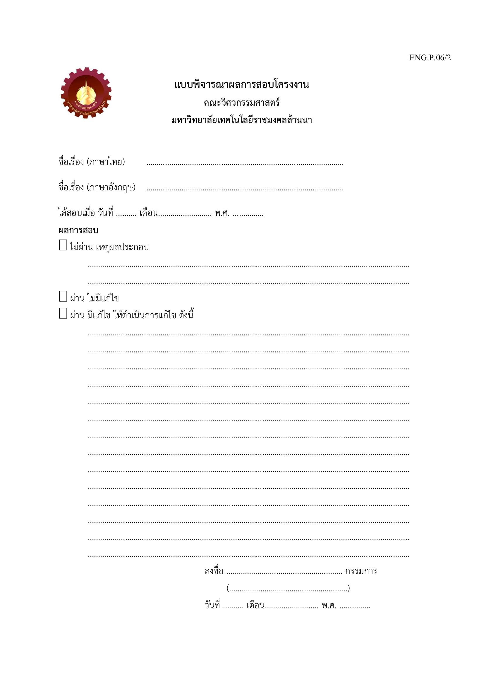

ระบบจัดการคำสั่งซื้อและตรวจสอบคลังสินค้า กรณีศึกษาร้านวัสดุก่อสร้างอำพรคอนกรีต
Order Management and Inventory Control System: A Case Study of Amporn Concrete Construction Materials Store
16
ตุลาคม
2569
✓
1. ใบเสร็จพิมพ์ชื่อย่อของพนักงานขาย ไม่พิมพ์ชื่อ-นามสกุลเต็ม
2. เพิ่มการป้องกันความเสียหายของธุรกิจกรณีรหัส QR สร้างผิดพลาด
3. บทที่ 2 เพิ่มทฤษฎีเว็บซ็อกเก็ตและการตอบสนองแบบเรียลไทม์ และโยงกับระบบ
4. แก้ชื่อหลักสูตรและสาขาวิชาบนปกให้ตรงกับหน้าอนุมัติ และรายชื่อกรรมการ
5. จัดรูปแบบเล่ม: ข้อความชิดขอบ สารบัญ หัวข้อที่ยาวเกินบรรทัด ตารางที่ถูกตัดข้ามหน้า
6. วัตถุประสงค์ใช้ลำดับเลข 1) 2) และเปลี่ยนคำว่า "หมุดหมาย" ให้ชัดเจน
7. ขยายความชื่อ อำพร OMS และหัวข้อ 2.4 เพิ่มระบบที่เชื่อมหน้าร้านกับคลังแบบเรียลไทม์
8. ระบุที่มาของเวลาเดินในเกณฑ์ NFR-02 และแก้เลขตารางที่อ้างในหัวข้อ 3.2.5
9. วาดแผนภาพลำดับ (รูปที่ 3.8 และ 3.9) ใหม่ให้อ่านได้ชัด
10. เรียงเอกสารอ้างอิงใหม่ และแก้รายการ [26] [27] [28] [30] ให้ตรงต้นฉบับ
11. กิตติกรรมประกาศเพิ่มคำขอบคุณอาจารย์ที่ปรึกษา
อาจารย์นริศ กำแพงแก้ว